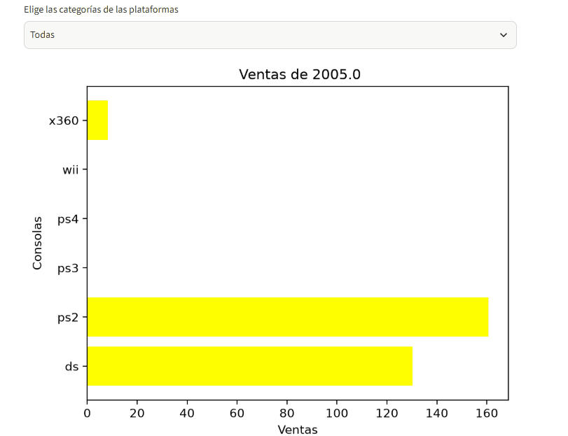

Diego Durán
Científico de datos jr
Interpretando los números detrás de las tendencias.
Científico de datos jr
Interpretando los números detrás de las tendencias.
¡Hola! Soy Diego Durán, científico de datos jr. Durante años escribí historias para conectar con millones de personas; hoy utilizo los datos para traducir el comportamiento de las audiencias y las tendencias con las que se conectan. Mi trayectoria comenzó en el periodismo digital y la edición de contenidos en medios de alcance masivo como Grupo Imagen, UPSOCL e Infobae. Ahora, en esta nueva etapa, descubrí que detrás de cada hábito de consumo, tema o algoritmo de búsqueda hay un patrón cuantitativo esperando ser interpretado.
Complemento mi experiencia en el posicionamiento de contenidos con estrategias GEO, Search y AEO con la traducción de datos del consumo de audiencias a través de herramientas como Python, SQL, Seaborn y pandas para tomar decisiones estratégicas. Soy una persona comprometida con el aprendizaje y la orientación de resultados.
Realicé una evaluación estadística y de correlación para medir el impacto de las condiciones meteorológicas y la ubicación geográfica en la duración y frecuencia de los viajes en taxi. Realicé una prueba de hipótesis independientes, demostrando que la lluvia incrementa significativamente la duración promedio del viaje. Tecnologías utilizadas: Python, Pandas, SciPy, Matplotlib, Jupyter Notebook
Desarrollé un análisis cuantitativo para identificar factores de éxito comercial, ciclo de vida de consolas y tendencias regionales. Con estos dato, generé hallazgos y visualizaciones para orientar la toma de decisiones estratégicas en la industria de cara a las tendencias que han surgido. Tecnologías: Python, Pandas, Matplotlib, Seaborn, SciPy, Jupyter Notebook
Para visualizar mejor las consolas en declive y rentables a través del tiempo, hice una gráfica bar chart race con streamlit y time.sleep. Formé un bucle donde las ventas se actualizan por año, lo que simula una animación en la cual se identifica qué consola dominó cada periodo.

Ver bar chart raceRealicé un análisis estadístico y de comportamiento de usuarios para evaluar la rentabilidad financiera y los patrones de consumo entre los planes Surf y Ultimate de Megaline. Demostré estadísticamente que el plan Ultimate genera mayores ingresos promedio. Además identifiqué una oportunidad de negocio en el plan Surf, donde el 35.9% de los usuarios excede sus límites de minutos. Tecnologías: Python, SciPy, Matplotlib, Numpy
Evalué el comportamiento de compra de los clientes en una plataforma de entrega de comestibles a partir de un conjunto de datos masivo con anomalías, duplicados y valores ausentes. Identifiqué patrones de repetición de compra (las bebidas superan el 70% de retención), detecté picos de pedidos a los 7 días y a las 10:00-15:00 horas, y corregí fallas de registro en un universo de 149,626 usuarios únicos. Tecnologías: Python, SciPy, Matplotlib, Numpy
¿Te gusta mi trabajo? ¡Contáctame!